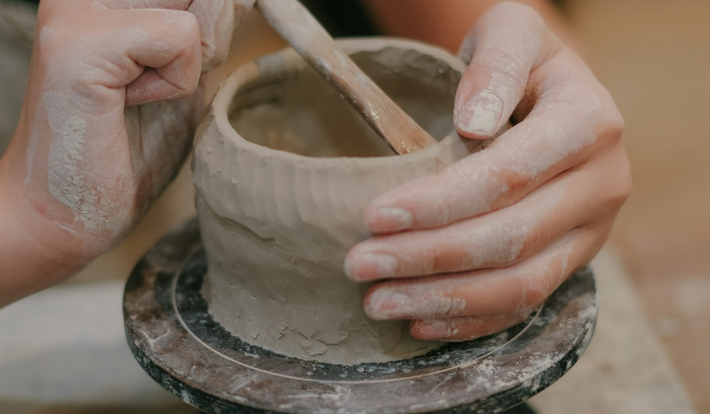
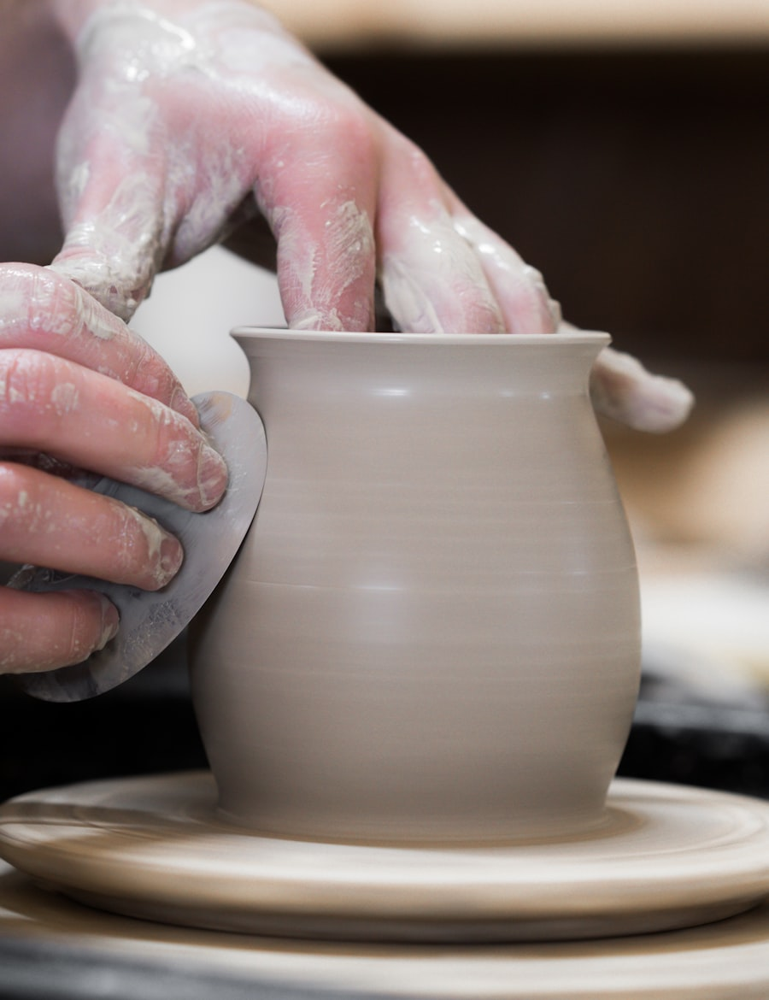
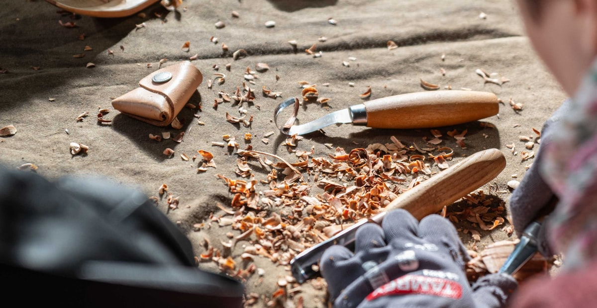
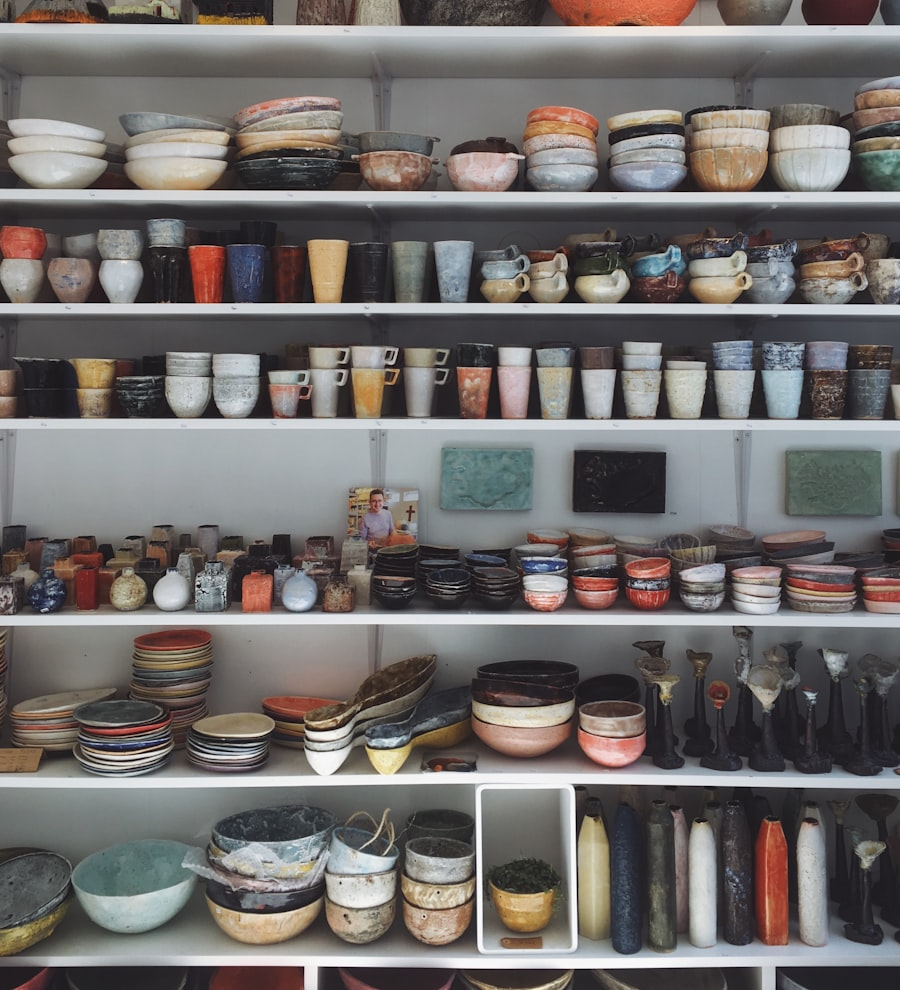

Pottery, woodwork and textiles workshops in Alderton. Eight benches, all the tools, tea in the break. Beginners genuinely welcome.

Wheel throwing and hand building with Erin. Your pots are glazed, fired and ready to collect about three weeks later.

Spoon carving and small joinery with Joss. Sharp tools, proper technique, something useful in your bag by home time.
Indigo dyeing and visible mending with Mim. Old jumpers leave better than they arrived.

“I booked the wheel taster for my birthday and came home with three pots and a new hobby. Erin is endlessly patient.”
Hannah R., first go on the wheel, March 2026
New term dates land every couple of months, with a live seat count on every class. Email us and we will save you a seat, or tell us the craft and we will let you know when it is next running.
Unit 4, The Old Tannery
Alderton AL3 6QF